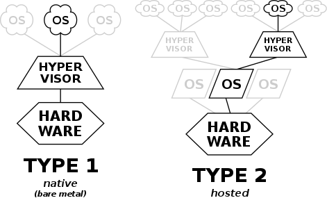
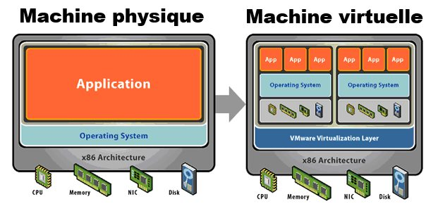
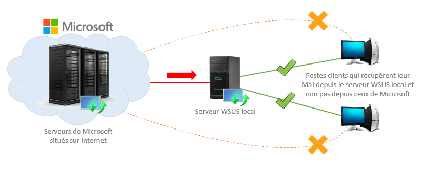

Jusqu'à présent, nos services étaient gérés et sous-traités par une ESN. Nous allons construire notre propre infrastructure et proposer les services nécéssaire à notre organisation. Celle-ci comprendra un certain nombre de services : serveurs Broker, RDS, AD, SNMP, DNS, DHCP, WSUS, WDS. Nous crérons différents VLAN, affecterons les ACL, puis configurons notre parefeu afin d'établir les règles entre notre DMZ, le LAN et le WAN.
Proxmox est une plate-forme de virtualisation de serveur, basé sur Debian GNU/Linux et utilise un noyau Linux. Le code source de Proxmox est publié sous la licence publique générale GNU Affero v3, ce qui signifie la possibilité d’utiliser le logiciel, d’inspecter le code source ainsi que de contribuer au projet. La licence est dite “libre” et “contaminante”. La plateforme Proxmox est livrée sans coût de licence, offre un accès complet à toutes les fonctionnalités et augmente la flexibilité, la sécurité et la fiabilité de votre infrastructure informatique.
Un hyperviseur est une machine permettant de faire cohabiter plusieurs machines virtuelles. Il existe deux types d'hyperviseur, le type 1 "barre métal" s'exécute directement sur la machine physique. L'hyperviseur de type 2 est un logiciel qui s'applique sur un OS distinct.
La virtualisation s'appuie sur une couche logicielle pour simuler des fonctionnalités et créer un système informatique virtuel. Il permet de faire fonctionner sur une machine physique plusieurs systèmes d'exploitations ou applications de manière indépendante.
Cependant, la centralisation que permet la virtualisation entraine une augmentation des risques informatiques. Il ne faut pas négliger l'aspect critique de la virtualisation, notamment en cas panne ou d'attaque.
WSUS est un rôle basé sur Windows server permettant de centraliser et de déployer les mises à jours de produits Microsoft sur des machines présente sur un réseau.
WSUS centralise les mises à jour voulues et nécessaire à votre parc informatique, en interne sur un serveur, permettant aux machines clientes par la suite de venir récupérer ces mises à jour via ce serveur. Le serveur pourra ainsi effectuer une seule requête par mise à jour sur les serveurs Microsoft. Évitant ainsi la surconsommation de la bande passante, par la multiplication individuelle de mises à jour par chaque machine, en passant par internet.
Il existe des failles dans chaque systèmes d’exploitations et logiciels, Les constructeurs proposent régulièrement des mises à jour afin de réduire ces vulnérabilités. Il convient donc au sein des organisations d’établir certaines stratégies en termes de mises à jour :
Un des avantages de WSUS est qu’il permet d’être certain que toutes les propositions de mises à jour proviennent du même constructeur Microsoft rendant celles-ci fiable. La pratique des mises à jour est donc un outil indispensable à la sécurisation du système d’information.
Ci-dessous.